AMUSEMENT-PARKS.fun · Playground 6.0.0 · 18 octobre 2026
Référence de revue reconstituée
Le pack HTML/PNG original du 14 octobre est indisponible. Cette planche rassemble le contrat graphique versionné et les captures conservées, conformément à la demande de reconstitution. Elle ne constitue pas une copie du prototype perdu ni une certification pixel à pixel de celui-ci.
Contrat des tokens · Matrice de revue visuelle · Critères de livraison
Repères contractuels
Composition
Largeur éditoriale de 1 160 px, surfaces opaques, filets visibles et rayons de 2 px. La photographie et les titres structurent les pages ; les contrôles et contenus existants restent présents.
Identité
Wordmark réel et slogans dans les huit langues préservés. Les variantes clair/sombre, la préférence de thème et les données métier restent celles de l’application.
Lisibilité
Texte courant contrasté à 4,5:1 minimum, focus visible et cibles accessibles. Les libellés reviennent à la ligne sans être rognés ou comprimés dans des colonnes étroites.
Palette conservée
Variante sombre
Papier #151a17, encre #f5f5ec, surface #252c26, orange #ff7551, lime #d1ec70 et bleu #49c9df. Les encres sémantiques contrastées du contrat remplacent les accents décoratifs dans les petits textes.
Cible de présentation conservée
Ces images sont les fixtures responsive versionnées avant la reprise cloud. Elles donnent des repères de composition ; les résultats de l’application compilée sont contrôlés séparément en CI.

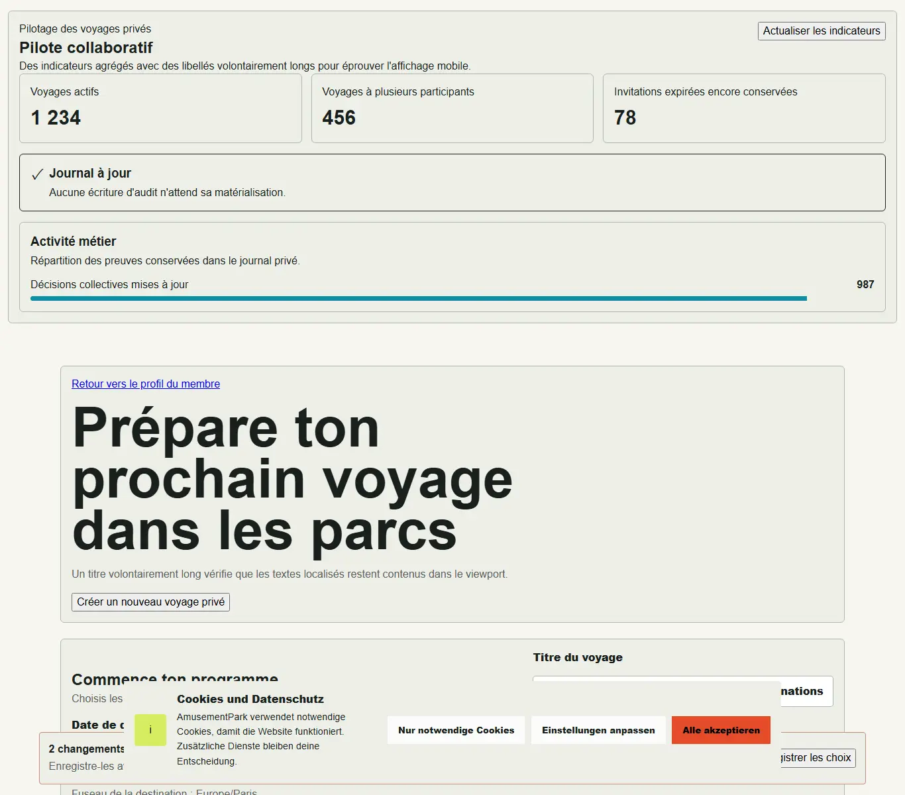

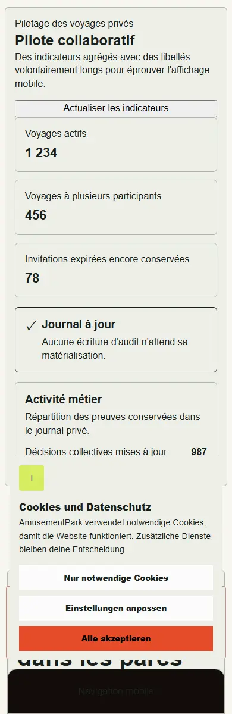

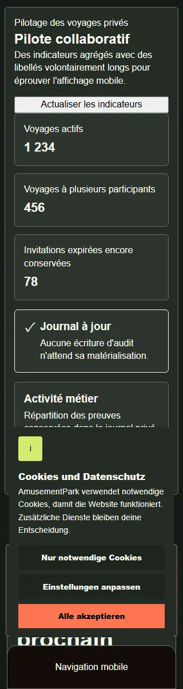

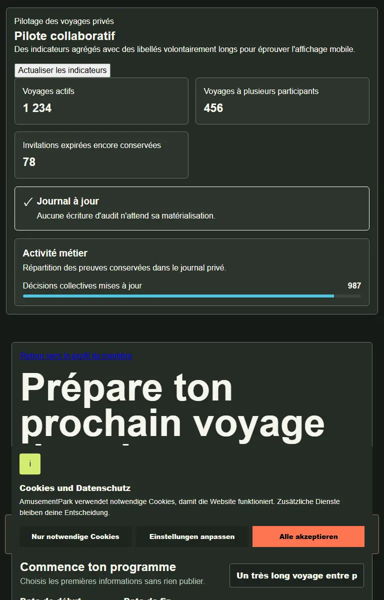
Avant : application V5.4.101

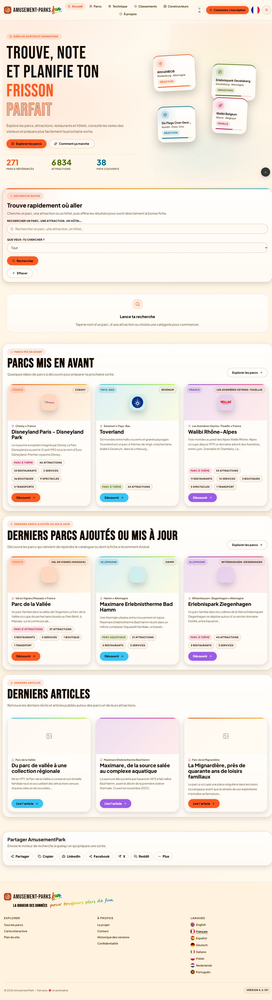

Après : vérification ciblée de la session expirée
Captures du bundle Angular corrigé, à partir d’entrées synthétiques isolées : session refusée, redirection réelle et modale de connexion. Huit langues, trois largeurs et deux thèmes donnent 48 captures sans défaut détecté. Ces preuves ne certifient ni OAuth réel, ni API privée, ni la campagne complète.

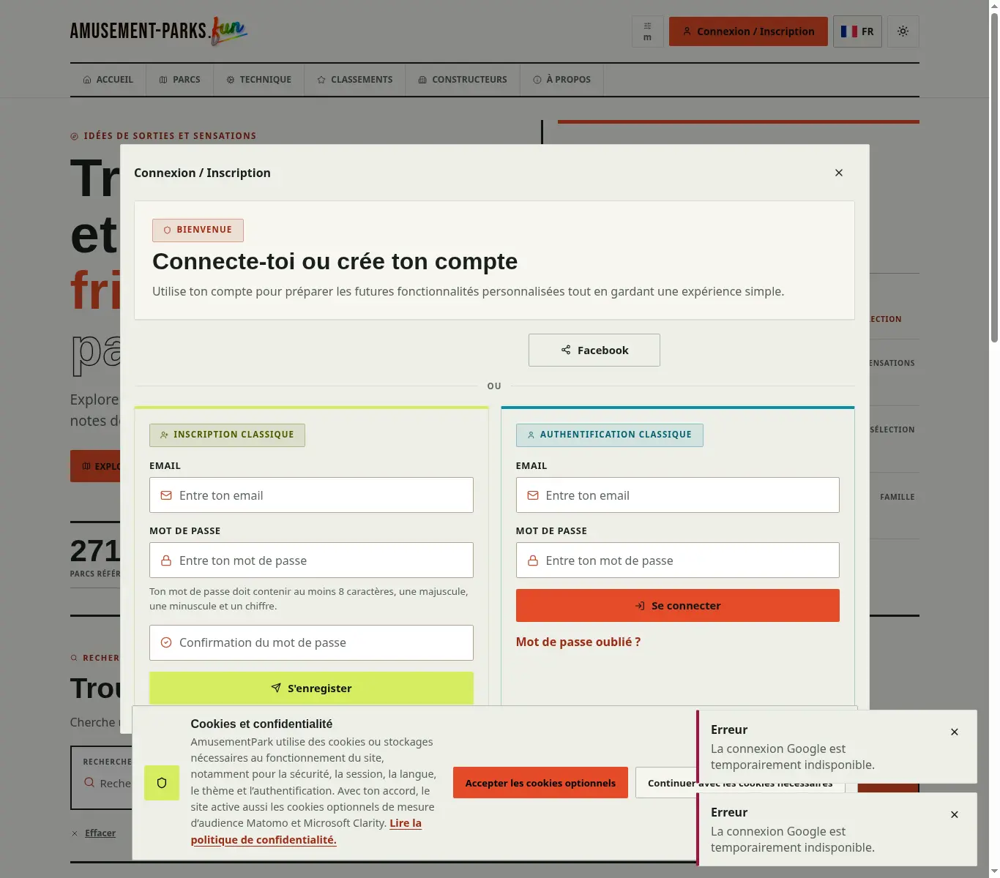

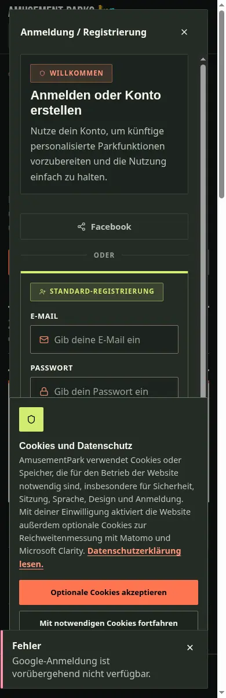
Provenance, empreintes et résultats ciblés
Après : barre de vue admin et texte agrandi
La revue du bundle a révélé des mots coupés dans les boutons de mode à 320 px et root 32 px. Après reflow, les scénarios FR/DE passent 564 contrôles et 144 captures, dont faible hauteur, safe-area et navigation clavier dans le défilement local. Les huit langues passent aussi 128 cas CSS ciblés. Il s’agit du shell synthétique isolé, sans opération d’administration réelle.

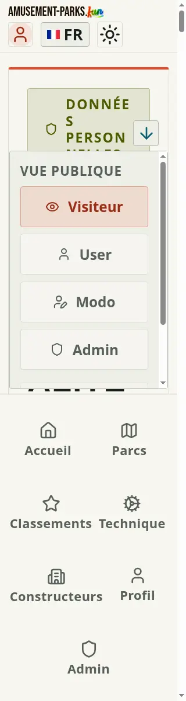

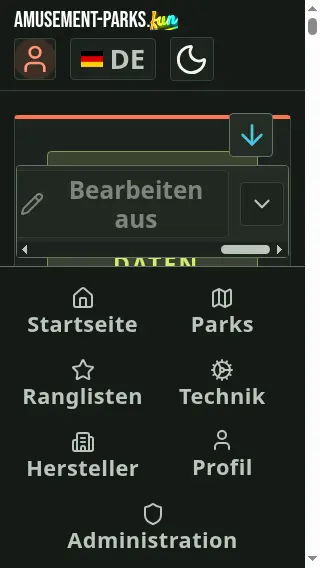
Provenance et résultats du shell admin
Après : panneau de récupération et titre contenu
La police V6 révélait un rognage du titre introductif sur desktop. Le titre suit maintenant la largeur de son panneau ; les espacements laissent de la place au texte agrandi. Les huit langues passent 208 cas CSS et 96 dispositions de pages anonymes du bundle compilé, sans appel API ni envoi d’email.

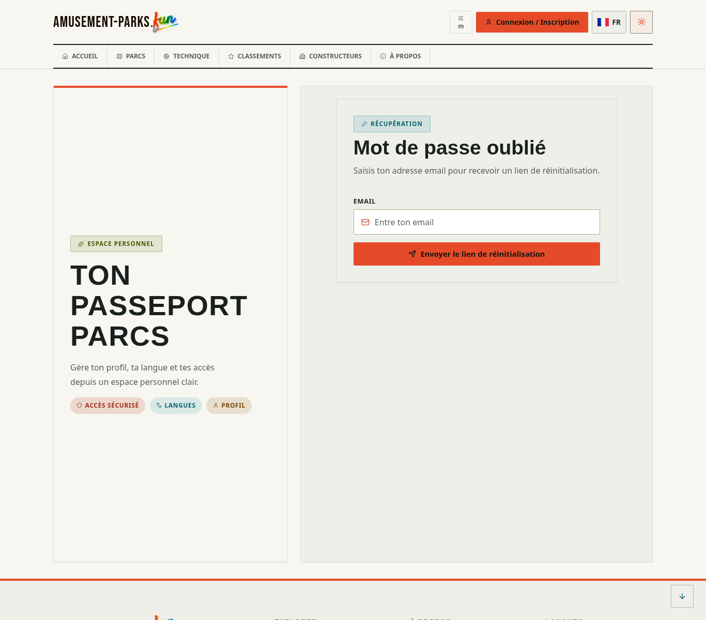

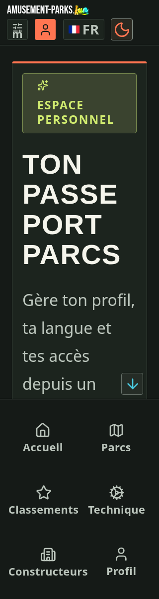
Provenance et résultats du titre auth
Accessibilité des dialogues
Le titre existant du choix de langue fournit désormais aussi son nom accessible, même avec son header visuellement masqué. Dix états du bundle ont été examinés dans l’arbre Chromium : récupération, connexion et choix de langue dans les huit langues. Les contrôles sont nommés ; Tab/Maj+Tab restent contenus dans les dialogues de connexion et de langue vérifiés en français. Il s’agit d’une revue d’arbre et de focus, sans certification par lecteur d’écran ni réussite OAuth.
Résultats d’accessibilité et empreintes
Acceptation finale
- Comparer les captures Angular du dernier code aux repères conservés et aux mini-fiches des familles, en clair/sombre et sur les tailles prévues.
- Vérifier contenus, navigation, formulaires, erreurs, médias, clavier, zoom, textes longs et réservations des contrôles fixes ; préserver les constats legacy identifiés.
- Exiger les tests backend/frontend, les contrôles d’architecture, traductions, sécurité, performances, SSR/SEO et retour arrière de la campagne complète.
- Lire les commentaires et revues de la PR, puis contrôler version, empreinte, santé et intégrité des réponses après la livraison atomique.